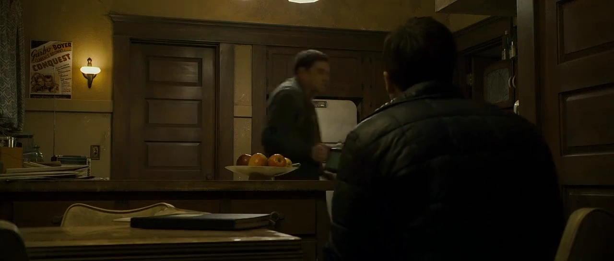
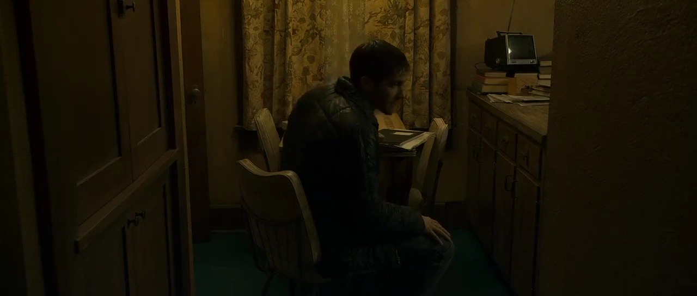
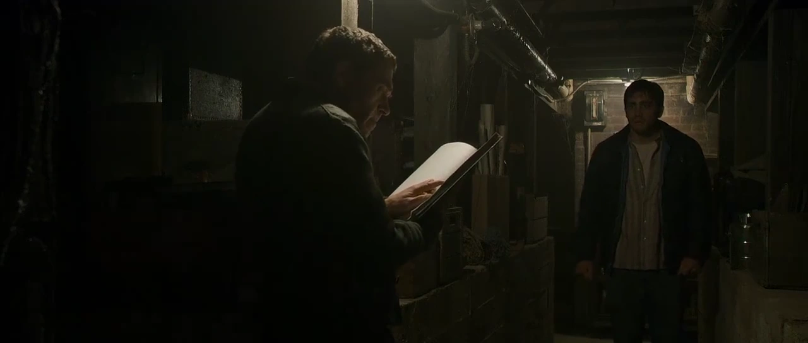

{kind=link}
| Abbrev | Film | Clip Start | Clip Stop | Duration |
|---|---|---|---|---|
| Zodiac | Zodiac (2007) | 02:16:07.000 | 02:21:36.000 | 315 |
Zodiac
Film Information
Zodiac is a 2007 American mystery thriller film directed by David Fincher from a screenplay by James Vanderbilt, based on the non-fiction books by Robert Graysmith, Zodiac and Zodiac Unmasked, which were published in 1986 and 2002, respectively. The film stars Jake Gyllenhaal, Mark Ruffalo, and Robert Downey Jr. with Anthony Edwards, Brian Cox, Elias Koteas, Donal Logue, John Carroll Lynch, Chloë Sevigny, Philip Baker Hall and Dermot Mulroney in supporting roles.
All information in this section came from Wikipedia.
Clip Information
Robert Graysmith has been investigating the string of killings in and around San Francisco attributed to the Zodiac Killer. He is visiting the house of Bob Vaughn, a silent film organist who used to work with one of Graysmith’s suspects, Rick Marshall.
| Characteristic | Value |
|---|---|
| Format | MPEG-4 |
| File Size | 74.8 MiB |
| Duration | 329.038 |
| Frame Rate | 23.976 |
| Video Width | 1920 |
| Video Height | 800 |
| Video BitRate | 1.6 MB/s |
| Audio Channels | 6 |
| Audio SamplingRate | 48000 |
| Audio BitRate | 341.1 kB/s |




Subtitles
The following wordcloud shows the words used in this clip, scaled by number of occurrences and colored by sentiment (orange = negative, green = positive, grey = neutral or unsure). The sentiment estimates in this plot are token-based and derived from the Bing lexicon. Note that the words have been stemmed and lemmatized and stopwords have been removed.
{kind=link}
The following figure shows the estimated sentiment (VADER compound score) for each subtitle line (orange = negative, green = positive, grey = neutral or unsure).
{kind=link}
The table below shows all subtitles in this clip with the start and stop time of each subtitle’s appearance in seconds.
| Start | End | Subtitle |
|---|---|---|
| 17.74 | 19.64 | Watch your step. |
| 20.81 | 22.71 | Come in. |
| 23.91 | 25.81 | -Very nice house. -Oh, thank you. |
| 27.11 | 29.01 | It's very rustic. |
| 29.05 | 30.95 | -Can I take your jacket? -No, thank you, I'm fine. |
| 32.32 | 34.32 | Okay. This way, please. |
| 37.09 | 38.93 | -Have a seat. -Thank you. |
| 38.93 | 40.83 | -How about some tea? -Oh, no, I'm all right. |
| 41.56 | 43.46 | -You sure? -Yes. |
| 43.90 | 45.80 | I wanted to ask you about a film that the Avenue may have played |
| 47.73 | 49.63 | while you were the organist there. |
| 49.74 | 51.64 | The Most Dangerous Game? |
| 52.11 | 54.01 | Oh, it's a classic. RKO. 1932. |
| 55.54 | 57.44 | Fay Wray, Joel McCrea, Leslie Banks. We've run that picture many times. |
| 60.35 | 62.25 | In '68, '69? |
| 63.48 | 65.38 | I'd have to check my records. Why? |
| 65.79 | 67.89 | Do you remember the Zodiac? |
| 70.09 | 71.99 | This is about Rick Marshall, isn't it? |
| 72.46 | 74.36 | -He was a projectionist there, right? -For a time, yes. |
| 75.96 | 77.86 | But I have no occasion to correspond with him these days. |
| 80.10 | 82.00 | Okay. Well, there is a connection |
| 82.67 | 84.57 | between one of the Zodiac attacks and that film. |
| 85.54 | 87.44 | You mean the symbol? |
| 88.54 | 90.31 | Hold on. |
| 90.31 | 94.45 | The Zodiac symbol on film. It's on the countdown. |
| 98.32 | 100.22 | It's trimmed off each reel before it's shown, |
| 101.02 | 102.92 | but it always arrives with it. |
| 103.66 | 105.56 | Right there. |
| 105.66 | 109.37 | The first time I saw it in the papers, I thought about that. |
| 110.20 | 111.83 | We got a tip |
| 111.83 | 113.73 | that Rick left a film canister here that he told you never to open. |
| 115.90 | 119.04 | A tip about a mysterious film canister? |
| 119.87 | 121.77 | Is it true? |
| 123.14 | 125.01 | Yes. |
| 125.01 | 126.91 | -Did you open it? -No. |
| 127.41 | 131.73 | -May I see it? -Rick took it back in 1972. |
| 133.42 | 135.32 | This tip is how you got it in your head that Rick is the Zodiac? |
| 138.29 | 140.06 | That and the poster. |
| 140.06 | 141.96 | The poster? |
| 143.36 | 145.23 | The poster that Rick drew. |
| 145.23 | 147.13 | The handwriting is the closest that we have ever come to a match. |
| 148.54 | 150.44 | -Rick didn't draw any posters. -No, he drew this one. |
| 151.91 | 155.38 | Mr. Graysmith, I do the posters myself. |
| 156.74 | 158.64 | That's my handwriting. |
| 166.85 | 168.75 | I won't take any more of your time. |
| 169.82 | 171.72 | Why don't I just go and find out when we played that film? |
| 175.30 | 176.86 | Oh, that's all right. |
| 176.86 | 180.31 | It's not a problem. They're just down in the basement. |
| 182.10 | 185.05 | Not many people have basements in California. |
| 187.71 | 189.61 | I do. |
| 190.98 | 192.98 | You coming, Mr. Graysmith? |
| 204.26 | 207.97 | The original studio one-sheets, I always kept for myself. |
| 209.83 | 211.73 | The cheapo knock-offs like you brought today |
| 212.47 | 215.61 | I end up tossing into the back alley. |
| 230.08 | 231.98 | '69. |
| 237.29 | 238.62 | You live alone? |
| 238.63 | 240.53 | Most Dangerous Game ran in May '69. |
| 244.50 | 246.98 | So, that would be about |
| 247.87 | 251.18 | nine weeks before the first Zodiac letter, correct? |
| 254.07 | 255.97 | Yeah. |
| 259.65 | 263.96 | Do you think he saw the film in our theater and was inspired? |
| 270.02 | 272.94 | Are you sure there's nobody else in the house? |
| 274.53 | 277.24 | Would you like to go upstairs and check? |
| 277.93 | 279.83 | No. |
| 282.07 | 284.64 | Thank you. Thanks for everything. |
| 285.47 | 287.37 | You're welcome. |
| 308.23 | 310.13 | It's locked. |
| 320.47 | 322.37 | Thank you. |
| 324.91 | 326.95 | Good night, Mr. Graysmith! |
Holistic Ratings
A total of 76 participants watched this film clip and then provided holistic ratings on how the entire clip made them feel. These holistic ratings were completed using five Positive Affect items (i.e., alert, determined, enthusiastic, excited, inspired) and five Negative Affect items (i.e., afraid, distressed, nervous, scared, upset), each rated on an ordinal scale from 0 to 4. The plot below shows the distribution of scale scores (boxplot plus individual ratings).
{kind=link}
Dynamic Ratings
A total of 75 participants watched this film clip and used the CARMA software to provide continuous (i.e., second-by-second) ratings of how it made them feel. These continuous ratings were made on a single emotional valence scale ranging from -4 (very negative) to 4 (very positive).
Chromodoris Plot
We can plot the distribution of all valence ratings per second of the film clip to get a sense of how its emotional tone changes over time. The solid black line represents the mean of all ratings and the yellow, green, and purple ribbons represent the central 50%, 70%, and 90% of the ratings, respectively.
{kind=link}
Inter-Rater Reliability
A Bayesian generalizability study was used to decompose the variance in ratings of this video clip into the following components: timepoint variance (in average ratings of each second, across raters), rater variance (in average ratings from each rater, across seconds), and residual variance (including second-by-rater interactions and measurement error). The lower and upper columns in the table below represent the boundaries of the 95% equal-tail credible interval. Note that we dropped the first 10 seconds of each clip (as rater “warmup” time).
| Component | Term | Estimate | Lower | Upper | Percent |
|---|---|---|---|---|---|
| Rater | Variance | 0.736 | 0.558 | 1.051 | 0.294 |
| Timepoint | Variance | 1.103 | 0.949 | 1.311 | 0.442 |
| Residual | Variance | 0.660 | 0.648 | 0.672 | 0.264 |
From these variance components, we can estimate inter-rater reliability of the ratings. There are many formulations of the two-way intraclass correlation (ICC), but the most relevant to our purposes here are the balanced average-measures consistency formulation or ICC(C,k) and the balanced single-measures consistency formulation or ICC(C,1).
| Term | Estimate | Lower | Upper | Raters | Error |
|---|---|---|---|---|---|
| ICC(C,1) | 0.628 | 0.590 | 0.665 | 1 | Relative |
| ICC(C,k) | 0.992 | 0.991 | 0.993 | 75 | Relative |
Below, we can also visualize the posterior distributions of each of these parameters. Values with higher posterior density are more probable.
{kind=link}